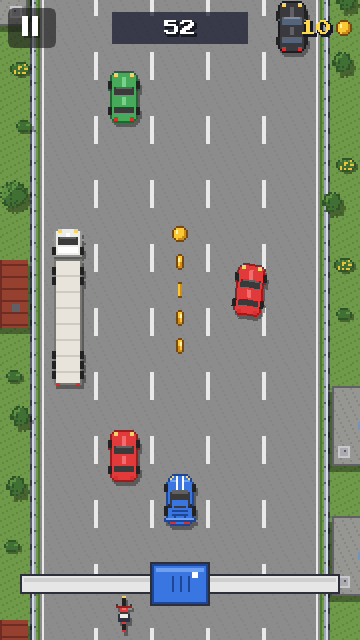
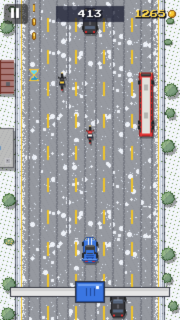
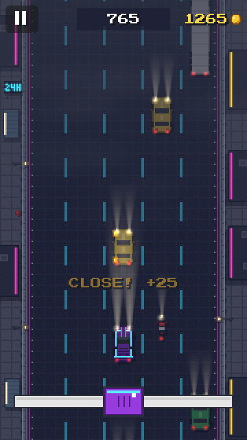

INCHWAY
Pixel-artowa gra zręcznościowa na jeden kciuk: prowadzisz auto suwakiem po pięciopasmowej autostradzie, omijasz ruch, ustępujesz karetkom i mijasz auta o włos. Szukamy testerów przed premierą w Google Play – za darmo, na telefon z Androidem.



W 3 krokach
-
Dołącz do grupy testerów – zaloguj się kontem Google, którego używasz w Sklepie Play, i kliknij „Dołącz do grupy”.
DOŁĄCZ DO GRUPY -
Zostań testerem – na tej stronie kliknij „Zostań testerem” (tym samym kontem).
ZOSTAŃ TESTEREM -
Zainstaluj grę ze Sklepu Play – link „Pobierz z Google Play” na stronie z kroku 2 albo:
GOOGLE PLAY
Ważne: nie wypisuj się przez 14 dni – tyle Google wymaga, zanim gra trafi do wszystkich. Pograj kiedy chcesz, a uwagi wyślij na contact@qkix.eu. Gra nie wymaga konta, ma jeden baner reklamowy; zakupy w teście są testowe (bez płacenia).
Masz w telefonie kilka kont Google? Sprawdź, czy Sklep Play (awatar w prawym górnym rogu) używa tego konta, którym dołączyłeś do grupy. Jeśli Sklep pisze „nie znaleziono elementu”, odczekaj kilka minut albo uruchom telefon ponownie.
Become a tester
Inchway is a one-thumb pixel-art arcade game: steer your car with a slider on a five-lane highway, weave through traffic, make way for ambulances and pass cars by an inch. We're looking for testers before the Google Play launch – free, Android phones.
-
Join the testers group with the Google account your Play Store uses.
JOIN THE GROUP -
Become a tester with the same account.
BECOME A TESTER -
Install the game from the Play Store.
GOOGLE PLAY
Please stay in the test for 14 days – Google requires it before the game can launch. Feedback: contact@qkix.eu. No account needed, one banner ad; purchases in the test are test purchases (no charge).